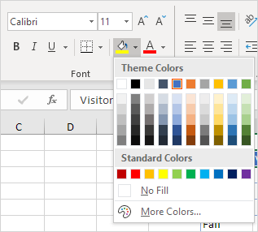

Excel menawarkan tema untuk mengubah tampilan buku kerja Anda dengan mengklik tombol. Setiap tema terdiri dari 12 warna, dua font (Headings dan Body) dan efek untuk bentuk dan SmartArt.
-
Pada tab Page Layout, di grup Themes, Anda dapat melihat bahwa lembar kerja di bawah ini menggunakan tema Office standar.
-
Pada tab Home, dalam grup Font, Anda dapat melihat Theme Colors dan Theme Fonts (Calibri Light dan Calibri) dari tema ini.
 
-
Pada tab Page Layout, di grup Themes, klik Themes dan pilih tema Badge.

-
Pada tab Home, di grup Font, Anda dapat melihat Theme Colors dan Font Tema (Impact dan Gill Sans MT) dari tema ini.


Catatan: pada tab Page Layout Halaman, dalam grup Tema, klik Colors, Kustomisasi Warna untuk membuat warna tema baru atau klik Font, Kustomisasi Font untuk membuat font tema baru. Selanjutnya, klik Tema, Simpan Tema Saat Ini untuk
menyimpan tema Anda di folder Tema Dokumen. Anda sekarang dapat menggunakan tema ini di semua buku kerja Anda. Anda bahkan dapat menggunakan tema ini di Word dan PowerPoint!
unduh file latihan
Lihat Beberapa Buku Kerja
Jika Anda ingin melihat beberapa buku kerja Excel secara bersamaan, jalankan langkah-langkah berikut.
- Pertama, buka dua atau lebih buku kerja.
-
Pada tab View, di grup Window, klik Arrange All.

-
Pilih pengaturan susunan yang diinginkan. Misalnya, klik Horizontal.

-
Klik Oke.
-
Pada tab View, dalam grup Window, klik View Side by Side (secara default, Synchronous Scrolling diaktifkan), untuk menggulir kedua buku kerja secara bersamaan.

unduh file latihan
Pulihkan Otomatis (AutoRecover)
File yang tidak pernah disimpan | Disimpan setidaknya sekali | Versi | Pilihan
Excel secara berkala menyimpan salinan file Excel Anda. Pelajari cara memulihkan file yang tidak pernah disimpan dan cara memulihkan file yang telah disimpan setidaknya sekali.
Jika Excel mengalami crash, itu menampilkan Panel Pemulihan Dokumen (Document Recovery), pertama kali Anda membuka Excel lagi. Ini adalah cara cepat untuk memulihkan file yang disimpan otomatis terakhir.
File yang tidak pernah disimpan
Jika Anda belum pernah menyimpan file dan secara tidak sengaja mengklik Jangan Simpan di bawah saat Anda menutup Excel (atau Excel crash), jalankan langkah-langkah berikut untuk memulihkan file yang terakhir disimpan secara otomatis.
Catatan: Excel memberi tahu Anda apakah salinan terbaru akan tersedia.
- Pada tab File, klik Info.
-
Klik Manage Workbook, Recover Unsaved Workbooks.

- Klik file yang terakhir disimpan secara otomatis.
Disimpan setidaknya sekali
Jika Anda telah menyimpan file setidaknya sekali dan Anda secara tidak sengaja mengklik Jangan Simpan di bawah saat Anda menutup Excel (atau Excel crash), jalankan langkah-langkah berikut untuk memulihkan file yang terakhir disimpan secara otomatis.
Catatan: Excel memberi tahu Anda apakah salinan terbaru akan tersedia.
- Buka file Excelnya!
- Pada tab File, klik Info.
-
Di bawah Manage Workbook, klik file yang terakhir disimpan secara otomatis.
Versi
Saat Anda mengerjakan file Excel, Excel menyimpan semua file yang disimpan otomatis sebelumnya di bawah Kelola Buku Kerja.
- Pada tab File, klik Info.
-
Kapan saja, Anda dapat kembali ke versi sebelumnya dari file Excel Anda.
Catatan: Excel menghapus semua file yang disimpan otomatis sebelumnya saat Anda menutup file Excel.
Pilihan
Untuk mengubah opsi AutoRecover. jalankan langkah-langkah berikut.
Pada tab File, klik Options, Save.

Catatan: Anda dapat menyimpan informasi AutoRecover setiap x menit, mengubah lokasi file AutoRecover, dll.
unduh file latihan
Simpan dalam Format 97-2003
Jika Anda menyimpan Anda file Excel di 97-2003 Format (.xls bukan format.xlsx baru), pengguna yang tidak memiliki Excel 2007 atau kemudian diinstal pada komputer mereka, masih bisa membuka file Excel Anda.
- Buka buku kerja.
- Pada tab File, klik Save As.
-
Pilih Excel 97-2003 Workbook (*.xls) dari daftar drop-down.
-
Klik Simpan.
Untuk secara otomatis menyimpan file Excel Anda dalam format 97-2003, jalankan langkah-langkah berikut.
- Pada tab File, klik Options
-
Di sisi kiri, klik Save dan pilih Excel 97-2003 Workbook dari daftar drop-down.

-
Klik Oke.
Catatan: Excel akan selalu memberi Anda peringatan jika fitur tidak didukung dalam format 97-2003, sehingga Anda dapat menyimpan file dalam format.xlsx baru (Buku Kerja Excel).